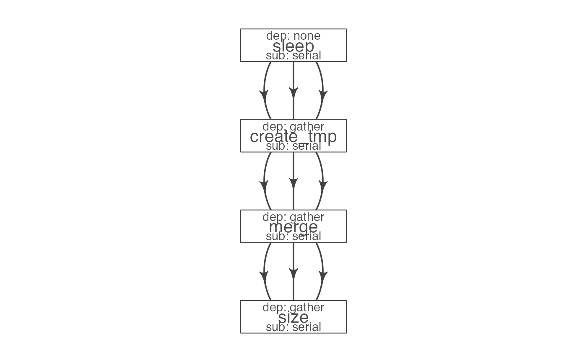
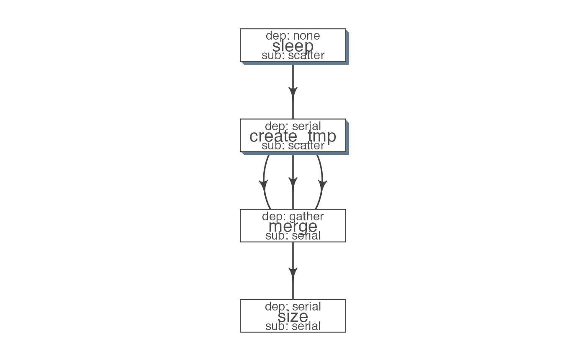

vignettes/flowr_tutorial.Rmd
flowr_tutorial.RmdLet us use the same example described in the overview section. We start by getting a set of commands we would like to run.
## wait for a few seconds…
sleep 5
sleep 5
## create two small files
cat $RANDOM > tmp1
cat $RANDOM > tmp2
## merge the two files
cat tmp1 tmp2 > tmp
## check the size of the resulting file
du -sh tmpWrap these commands into R
sleep=c('sleep 5', 'sleep 5')
tmp=c('cat $RANDOM > tmp1',
'cat $RANDOM > tmp2')
merge='cat tmp1 tmp2 > tmp'
size='du -sh tmp'Next, we would create a table using the above commands:
## create a table of all commands
library(flowr)
lst = list( sleep=sleep,
create_tmp=tmp,
merge=merge,
size=size)
flowmat = to_flowmat(lst, "samp1")
kable(flowmat)| samplename | jobname | cmd |
|---|---|---|
| samp1 | sleep | sleep 5 |
| samp1 | sleep | sleep 5 |
| samp1 | create_tmp | cat $RANDOM > tmp1 |
| samp1 | create_tmp | cat $RANDOM > tmp2 |
| samp1 | merge | cat tmp1 tmp2 > tmp |
| samp1 | size | du -sh tmp |
We have a few steps in a pipeline; we would use a flow definition to describe their flow. Flowr enables us to quickly create a skeleton flow definition using a flowmat, which we can then alter to suit our needs. A handy function to_flowdef, accepts a flowmat and creates a flow definition.
## create a skeleton flow definition
def = to_flowdef(flowmat)
suppressMessages(plot_flow(def))
The default skeleton takes a very conservative approach, creating all submissions as serial and all dependencies as gather. This ensures robustness, compromising efficiency. So customize this to make it super efficient.
We can make a few changes to make this pipeline a little more efficient. Briefly, we would run a few steps in a scatter fashion (in parallel).
A few points to note:
## sleep create tmp merge size
def$sub_type = c("scatter", "scatter", "serial", "serial")
def$dep_type = c("none", "serial", "gather", "serial")
kable(def)| jobname | sub_type | prev_jobs | dep_type | queue | memory_reserved | walltime | cpu_reserved | nodes | platform | jobid |
|---|---|---|---|---|---|---|---|---|---|---|
| sleep | scatter | none | none | short | 2000 | 1:00 | 1 | 1 | torque | 1 |
| create_tmp | scatter | sleep | serial | short | 2000 | 1:00 | 1 | 1 | torque | 2 |
| merge | serial | create_tmp | gather | short | 2000 | 1:00 | 1 | 1 | torque | 3 |
| size | serial | merge | serial | short | 2000 | 1:00 | 1 | 1 | torque | 4 |

Tip Alternatively, one may write this to a file (write_sheet(def, “sleep_pipe.def”)), make changes in a text editor and read it again (as.flowdef(“sleep_pipe.def”).
Next, we create a flow object:
fobj = to_flow(flowmat, def, flowname = "sleep_pipe")Finally, we can submit this to the cluster:
plot_flow(fobj)
submit_flow(fobj) ## dry run
fobj2 = submit_flow(fobj, execute = TRUE) ## submission to LSF cluster
## after submission, we can use the following:
status(fobj2) ## check status
rerun(fobj2) ## re-run from a intermediate step
kill(fobj2) ## kill it!We used a simple example where a single function was creating all the commands. This is easier, but a step (or module) is not re-usable in another pipeline. Thus we may write a module for each step, such that one may mix and match to create their own pipeline.
NOTE: A module, always returns a flowmat. A module may have one or several steps. A module + flowdef, becomes a pipeline.
## to follow this tutorial, you may download them:
url=https://raw.githubusercontent.com/sahilseth/flowr/master/inst/pipelines
cd ~/flowr/pipelines
wget $url/sleep_pipe.R ## A R script, with sleep_pipe(), which creates a flowmat
wget $url/sleep_pipe.def ## A tab-delimited flow definition file
wget $url/sleep_pipe.conf ## An *optional* tab-delim conf file, defining default paramsThe sleep_pipe calls the three other functions (modules); fetches flowmat from each, then rbinds them, creating a larger flowmat. You may refer to the sleep_pipe.R file for the source.
Using run
One may use run function to create the flowmat, fetch the flowdef and execute the pipeline in a single step. Here we would focus more on each of these steps in detail.
## 1. Single step submission:
fobj = run("sleep_pipe", execute = TRUE);
## 2
## change wd, so that we can source the files downloaded in the previous step
setwd("~/flowr/pipelines")
## 2a. optionally, load default parameters
load_opts("sleep_pipe.conf")
## 2b. get sleep_pipe() function
source("sleep_pipe.R")
## create a flowmat
flowmat = sleep_pipe()
## 2c. read a flow definition.
flowdef = as.flowdef("sleep_pipe.def")
## 2d. create flow and submit to cluster
fobj = to_flow(flowmat, flowdef, execute = TRUE)These are some of the practices we follow in-house. We feel using these makes stitching custom pipelines using a set of modules quite easy. Consider this a check-list of a few ideas and a work in progress.
picard_merge <- function(x,
samplename = opts_flow$get("samplename"),
mergedbam,
java_exe = opts_flow$get("java_exe"),
java_mem = opts_flow$get("java_mem"),
java_tmp = opts_flow$get("java_tmp"),
picard_jar = opts_flow$get("picard_jar")){
## Make sure all args have a value (not null)
## If a variable was not defined in a conf. file opts_flow$get, will return NULL
check_args()
bam_list = paste("INPUT=", x, sep = "", collapse = " ")
## create a named list of commands
cmds = list(merge = sprintf("%s %s -Djava.io.tmpdir=%s -jar %s MergeSamFiles %s OUTPUT=%s ASSUME_SORTED=TRUE VALIDATION_STRINGENCY=LENIENT CREATE_INDEX=true USE_THREADING=true",java_exe, java_mem, java_tmp, picard_jar, bam_list, mergedbam))
## Create a flowmat
flowmat = to_flowmat(cmds, samplename)
## return a list, flowmat AND outfiles
return(list(outfiles = mergedbam, flowmat = flowmat))
}opts_flow$get("param") to use their value.## Example conf file:
cat my.conf
bwa_exe /apps/bwa/bin/bwacheck_args() to make sure none of the default parameters are null.
## check_args(), checks ALL the arguments of the function, and throws a error. use ?check_args for more details.
opts_flow$get("my_new_tool")## NULLFor example we have a pipeline consisting of alignment using bwa (aln1, aln2, sampe), fix rg tags using picard and merging the files. We would create three files:
fastq_bam_bwa.R ## A R script, with fastq_bam_bwa(), which creates a flowmat
fastq_bam_bwa.conf ## An *optional* tab-delim conf file, defining default params
fastq_bam_bwa.def ## A tab-delimited flow definition fileNotice how all files have the same basename; this is essential for the run function to find all these files.
Reason for using the same basename:
run("fastq_bam_bwa", ....) it tries to look for a .R file inside flowr’s package, ~/flowr/pipelines OR your current wd. If there are multiple matches, later is chosen.fastq_bam_bwa.conf (if available).fastq_bam_bwa, then stitches a flow using fastq_bam_bwa.def as the flow definition.Feature:
run('fastq_bam_bwa', def = 'path/myflowdef.def'....)run('fastq_bam_bwa', def = 'path/myflowdef.def', conf='path/myconf.conf',....)This is quite useful for portability, since to use the same pipeline across institution/computing clusters one only needs to change the flow definition and R function remains intact.
Refer to help section on run for more details.
Tip: Its important to note, that in this example we are using R functions, but any other language can be used to create a tab-delimited flowmat file, and submitted using submit_flow command.
Here is a good example: https://github.com/flow-r/flowr/blob/master/inst/pipelines/fastq_bam_bwa.conf
(recommended for increased compatibility)
<%CPU%>, this makes this value dynamic and is picked up by the flow definition